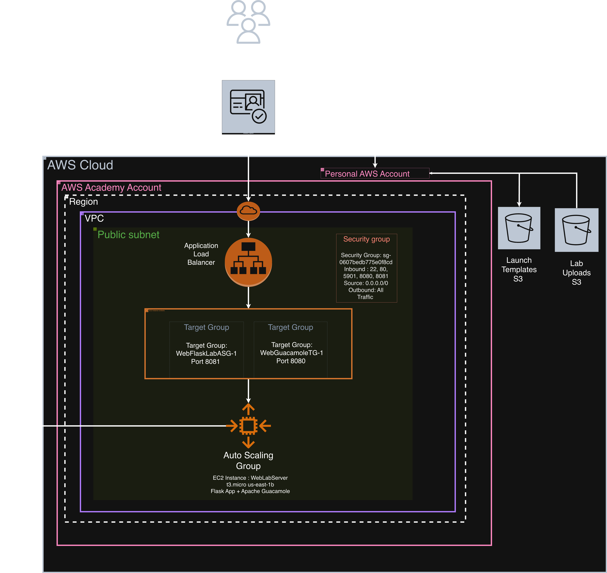

My name is Jorja Holland, and I am a student at SETU studying Computer Forensics and Security. I'm hardworking, self-motivated and always looking to improve. I enjoy taking on challenges that push me outside my comfort zone, and I take pride in seeing a project through from start to finish.
I believe that technical skills and soft skills go hand in hand. On the technical side I have built up strong skills in Python, AWS, cloud infrastructure and cybersecurity. I am organised, hardworking and able to manage my own time effectively. To me, being a well rounded graduate means bringing both to the table.
I chose this project because I wanted to build something that actually solves a real problem. During my time studying cyber security I noticed how frustrating it was for students to get lab environments set up consistently. It wasted time that should have been spent learning. LearnSec gave me the opportunity to combine my interest in cloud technology and security into one project.
This project is aimed at addressing the need for quick and reliable availability of virtual machines for students to perform labs for cyber security modules. Cloud automation simplifies the distribution of VMs providing scalability, consistency and availability.
By leveraging automation, this solution can create and configure VMs to suit the students requirements. This can be used by multiple students at once making it scalable, and they are only accessible by authorised users.
An iterative development approach was taken. It was broken into 5 two-week sprints. Each sprint consisted of the following:

WILL DO LATER